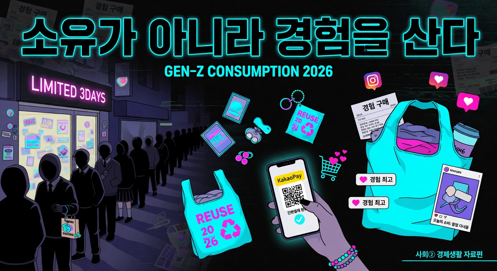

사회② · 경제생활과 선택 · 교사 참고 자료편
🔎 Grok x_search + web_search로 X·웹에서 최신 사례 자동 수집 → 자료편 HTML 자동 생성 (2026-05-29). 출처는 각 카드 하단 명시(R4).

💡 핵심 메시지 — Z세대 소비는 ‘물질 소유’보다 지금의 감정·경험·가치를 중시하는 방향으로 진화하고 있다.
부담은 적으면서 특별한 만족을 주는 소형·저가 아이템에 집중한다. 가격·크기는 작아도 ‘나만의 특별함’을 느끼는 제품(미니 굿즈, 소용량 프리미엄 뷰티)이 인기다.
너라면? 친구 생일에 비싼 것보다 작지만 의미 있는 선물을 골라 본 적 있니? 왜 그랬을까?
자신의 감정을 객관적으로 인지·관리하는 ‘메타센싱’을 소비 기준으로 삼는다. AI로 감정을 털어놓거나, 지금 이 순간의 감정·경험을 충족시키는 콘텐츠·제품을 선택한다.
너라면? 스트레스 받을 때 물건을 사는 대신 산책·음악으로 감정을 다스려 본 적 있니?
미래 불확실성 속에서 ‘지금 이 순간’을 놓치지 않으려 한다. 팝업스토어·박람회·제철 경험(식재료·페스티벌·콘텐츠)을 적극 활용하며 시간의 가치를 중시한다.
너라면? 수학여행이나 한정된 행사 때 “지금 가야겠다”고 느낀 적 있니? 그 이유는?
2025년 8월 대한상공회의소 조사(Z세대 350명)에서 66.9%가 “조금 비싸도 ESG 실천 기업 제품을 산다”고 답했다. 63.7%는 비윤리적 기업 제품 구매를 중단한 경험이 있다.
너라면? 매점·온라인 쇼핑 때 “이 회사 제품이 환경에 좋을까?” 고민해 본 적 있니?
오픈서베이 Z세대 트렌드 리포트 2025에 따르면, Z세대 10명 중 7명은 절약·저축에 관심을 두면서도 가전·패션·여행 등 의미 있는 분야엔 과감히 지출한다. 구매 기준도 가격뿐 아니라 판매자 신뢰·서비스 품질로 이동했다.
너라면? 용돈을 아껴 쓰면서도 좋아하는 취미 용품은 조금 비싸도 사는 편이니? 왜?
식재료를 넘어 패션·드라마·페스티벌 등 라이프스타일 전반에서 ‘제철’을 느끼는 경험을 추구한다. 계절감·시간의 흐름을 체감하는 소비가 늘고 있다.
너라면? 계절마다 다른 옷·음식·활동을 즐기며 “지금이 딱 좋다”고 느낀 순간이 있니?